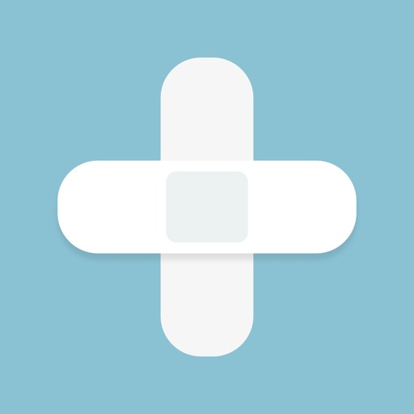
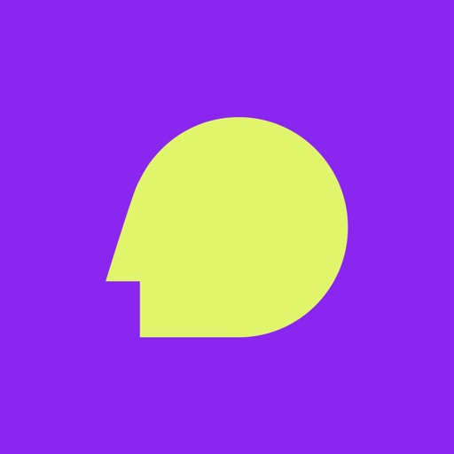
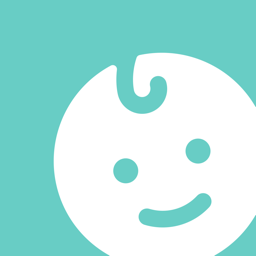

통증일기
0~10 척도로 통증 강도를 3초 만에 기록하고, 위치·양상·상황까지 정리해 진료 때 의사와 정확하게 소통할 수 있어요.
몸과 마음, 그리고 아이의 하루를 쉽게 기록하고 돌아볼 수 있는 모바일 앱을 만듭니다.

0~10 척도로 통증 강도를 3초 만에 기록하고, 위치·양상·상황까지 정리해 진료 때 의사와 정확하게 소통할 수 있어요.

인지행동치료(CBT) 기반 감정 일기. AI가 일기를 사실과 생각으로 나누고 숨은 인지왜곡을 찾아 대안적 사고를 도와줘요.

수유·이유식·배변·수면을 한 번의 탭으로. 가족이 함께 쓰는 육아 기록 앱으로 패턴과 성장을 한눈에 볼 수 있어요.